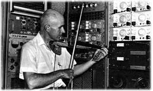
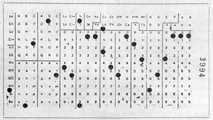

— Neil Postman, in Amusing Ourselves to Death (1985)
This Year’s Theme
In a time marked by technological acceleration, automation, and the
increasing normalization of systems that shape behaviour, perception, and
thought, PCD2026 proposes a moment of pause and reconsideration.
Reflect
On invisible infrastructures, algorithmic logics, and normalized aesthetics.
Resist
Simplistic solutions, technological determinism, and the illusion of neutrality.
Reform
Alternative poetics, practices, and futures for computation in art and design.
A Space for Plural
Computational Practices
PCD2026 is conceived as a shared space for engaging with multiple ways of thinking and working through computation in art and design. The programme of invited keynotes and selected workshops emerges as a direct response to the 2026 theme, articulating moments of reflection, forms of resistance, and gestures of reform through situated computational practices.
The invited contributions create spaces to reflect on the conditions under which computational systems operate – making visible their infrastructures, assumptions, aesthetics, and embedded values. They also propose ways to resist the apparent inevitablity of technological acceleration, challenging instrumental thinking, algorithmic determinism, and claims of neutrality.
Keynotes offer conceptual frameworks and critical distance, opening room for collective reflection on the cultural, political, and ethical dimensions of computation. Workshops function as spaces of active resistance and reform, where participants engage hands-on with alternative methods, protocols, and imaginaries.
Together, these contributions form a plural and intentional landscape of computational practices, where reflection leads to resistance, and resistance becomes a ground for reform – affirming computation as a situated, consequential, and poetic practice.



Image: Tony Freeth, 2020.
Program
Full program with workshops and
speakers to be announced soon!
Stay tuned